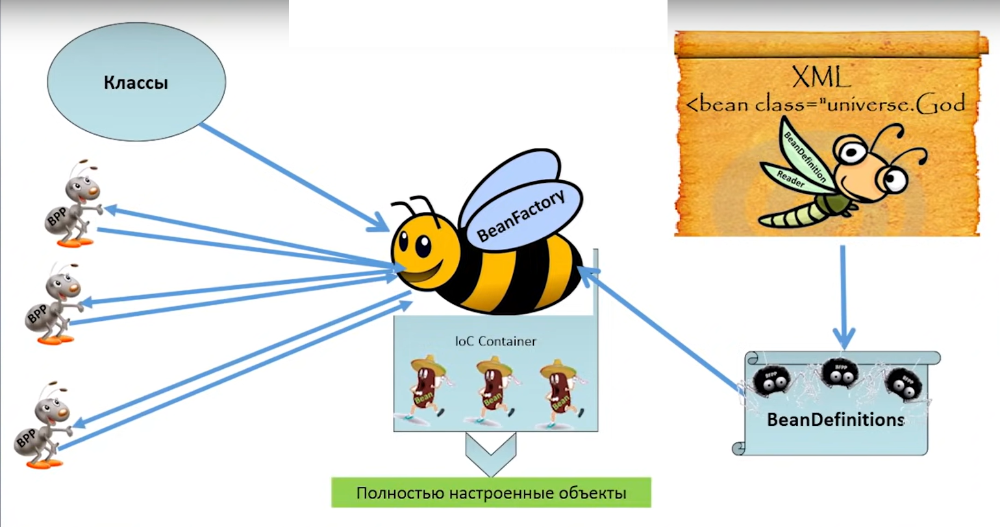

Application Context Представляет собой Spring Container. Можно создать несколько
Способы создания Application Context
1. Spring Boot создаёт: ApplicationContext context = SpringApplication.run(App.class, args);
2. new ClassPathXmlApplicationContext(...)
3. new AnnotationConfigApplicationContext(...) и другие способы.
Способы ДОБАВЛЕНИЯ бина в Application Context
1. XML конфигурация
<bean id="someBean" class="com.example.SomeBean"/>
2. Java конфигурация
@Configuration
public class AppConfig {
@Bean
public Engine engine() {
return new Engine();
}
@Bean
public Car car() {
return new Car(engine()); // Здесь внедряем бин engine через конструктор
}
@Bean
public Car car1() {
Car car = new Car();
car.setEngine(engine()); // Через сеттер
return car;
}
}
3. С помощью аннотаций @Component, @Service, @Repository и @Controller
4. Регистрация вручную через BeanDefinitionRegistry API (В уже поднятый контейнер)
ConfigurableApplicationContext configurableApplicationContext = (ConfigurableApplicationContext) context;
BeanDefinitionRegistry beanDefinitionRegistry = (BeanDefinitionRegistry) configurableApplicationContext.getBeanFactory();
GenericBeanDefinition beanDefinition = new GenericBeanDefinition();
beanDefinition.setBeanClass(DynamicBean.class);
beanDefinition.setScope(BeanDefinition.SCOPE_SINGLETON);
beanDefinitionRegistry.registerBeanDefinition("dynamicBean", beanDefinition);
5. Через FactoryBean
Способы ПОЛУЧИТЬ БИН из Application Context
1. context.getBean()
Pet pet = context.getBean("myPet"); //по имени
Pet pet = context.getBean(Pet.class); // по типу
Pet pet = context.getBean("myPet", Pet.class); //по имени и типу (нужную имплементацию)
Pet pet = context.getBean("myPet", arg1, arg2...); //с аргументами конструктора
Pet pet = context.getBean(Pet.class, arg1, arg2...); // --//--
Map<String, MyInterfaceType> beans = context.getBeansOfType(MyInterfaceType.class);// бины определённого типа
String[] beanNames = context.getBeanNamesForType(MyType.class); // имена бинов определённого типа
2. @Autowired
Применяется к Полю, Сеттеру и Конструктору
@Inject и @Resource не являются частью ядра Spring Framework
@Lazy для ленивой инициализации
В случае нескольких наследников или имплементаций: Отметить один из них @Primary
или Применить @Qualifier:
@Autowired //ОТМЕЧАЕТ КАКОЙ КОНСТРУКТОР ИСПОЛЬЗОВАТЬ ПРИ СОЗДАНИИ БИНА
public MyComponent(@Qualifier("serviceA") MyService myService) {// В КОНСТРУКТОРЕ
this.myService = myService;
}
@Autowired
@Qualifier("serviceA") // В ПОЛЕ И СЕТТЕРЕ
3. Через BeanFactory)
BeanFactory beanFactory = context.getAutowireCapableBeanFactory();
SomeBean someBean = beanFactory.getBean(SomeBean.class);
4. С помощью Java конфигурации
@Configuration
public class AppConfig {
@Bean
public Engine engine() {
return new Engine();
}
@Bean
public Car car() {
return new Car(engine()); // Здесь внедряем бин engine через конструктор
}
@Bean
public Car car1() {
Car car = new Car();
car.setEngine(engine()); // Через сеттер
return car;
}
}
5. С помощью XML конфигурация
6. С помощью @Lookup
Для создания экземпляров прототипа
В случае Синглтона возвращает один и тот жа экземпляр и не имеет смысла
Неявно создаёт наследника. Поэтому можно инжектить!
@Component
public abstract class SingletonBean {
@Lookup
public abstract Prot getPrototypeBean();
public void process() {
for(int i=0; i<10; i++) {
Prot prototypeBean = getPrototypeBean();
prototypeBean.doSomething();
}
}
}
Singlton должен быть stateless
Жизненный цикл бина (singleton)
Начало работы Spring Container
Создание бина
init-method
DI - Внедряются зависимости
Использование бина
destroy-method
уничтожение бина
Конец работы Spring Container
Вызов INIT-method DESTROY-method:
1. Java configuration)
@Configuration
public class AppConfig {
@Bean(initMethod = "init", destroyMethod = "cleanup")
public MyBean myBean() {
return new MyBean();
}
}
2. XML config)
<bean id="myDog" class="...Dog" init-method="init" destroy-method="destroy"/>
3. Annotations)
@PostConstruct
public void init(){...}
@PreDestroy
public void destroy(){...}
4. Реализацией интерфейсов)
@Component
public class MyBean implements InitializingBean, DisposableBean {
@Override
public void afterPropertiesSet() throws Exception {...}
@Override
public void destroy() throws Exception {...}
}
Как достать значение PROPERTY
0. Добавить свой *.PROPERTY)
@Configuration
@PropertySource("classpath:my.properties")
public class Config {....}
1. Аннотация @Value)
@Value("${app.message:defaultValue}")
private String message;
2. Конфигурационные классы @ConfigurationProperties)
@Component
@ConfigurationProperties(prefix = "app")
public class AppProperties {
private String message;
private int num;
public String getMessage() {
return message;
}
public void setMessage(String message) { //Сеттеры нужны!
this.message = message;
}
public int getNum() {
return num;
}
public void setNum(int num) { //Сеттеры нужны!
this.num = num;
}
}
3. Среда выполнения Environment)
@Autowired
private Environment env;
String message = env.getProperty("app.message");
4. MessageSource для переводов)
// messages_en.properties
@Autowired
private MessageSource messageSource;
String message = messageSource.getMessage("my.mes", null, Locale.getDefault());
Как работать с ТРАНЗАКЦИЯМИ
1. @Transactional
2. XML Configuration
3. Вручную управлять транзакциями
private PlatformTransactionManager transactionManager;
ransactionStatus status = transactionManager.getTransaction(new DefaultTransactionDefinition());
transactionManager.commit(status);
transactionManager.rollback(status);
Транзакции откатываются в случае НЕпроверяемых исключений
Параметры @Transactional
@Transactional реализована с помощью AOP
1. Propagation
REQUIRED (По умолчанию): Если нет активной транзакции, создается новая. Если есть - работает в старой.
REQUIRES_NEW: Создает новую транзакцию независимо от наличия активной. Если активная транзакция существует, она будет приостановлена до завершения новой.
SUPPORTS: Метод будет выполняться в рамках активной транзакции, если она есть. Если нет активной транзакции, метод будет выполняться без транзакции.
NOT_SUPPORTED: Метод будет выполняться без транзакции, даже если есть активная.
MANDATORY: Метод требует наличия активной транзакции. Если ее нет, будет выбрасываться исключение.
NEVER: Метод требует отсутствия активной транзакции. Если она есть, будет выбрасываться исключение.
NESTED: Создает вложенную транзакцию. Вложенная транзакция является частью родительской транзакции, но может быть откатывана независимо от родительской. Если нет активной транзакции, создается новая.
NESTED (With Savepoint): Аналогично Propagation.NESTED, но также устанавливает точку сохранения, которая позволяет откатывать только часть транзакции.
2. Isolation
3. ReadOnly
4. Timeout
5. RollbackFor: Указывает классы исключений, при которых должен выполняться откат.
6. NoRollbackFor: --//-- НЕ должен выполняться откат
...
Servlet Container: Tomcat, Jetty
В нём работают Servlet Filters (цепочка). До того как достигнет Dispatcher Servlet
проходит через все фильтры туда и обратно
Filters code
@Configuration
public class FilterConfig {
@Bean
public FilterRegistrationBean loggingFilter() {
FilterRegistrationBean registrationBean = new FilterRegistrationBean<>();
registrationBean.setFilter(new RequestTimingFilter());
registrationBean.addUrlPatterns("/api/*");
return registrationBean;
}
}
public class RequestTimingFilter implements Filter {
@Override
public void init(FilterConfig filterConfig) throws ServletException {}
@Override
public void doFilter(ServletRequest request, ServletResponse response, FilterChain chain)throws IOException, ServletException {
// pre
chain.doFilter(request, response); // 2. Передача запроса и ответа дальше по цепочке обработки
// post
}
@Override
public void destroy() {}
}
Dispatcher Servlet
В Нём работают Intercepters (цепочка).
потом направляет в контроллер
И обратно
Interceptors code
@Configuration
public class WebMvcConfig implements WebMvcConfigurer {
@Autowired
private CustomInterceptor customInterceptor;
@Override
public void addInterceptors(InterceptorRegistry registry) {
registry.addInterceptor(customInterceptor);
}
}
@Component
public class CustomInterceptor implements HandlerInterceptor {
@Override
public boolean preHandle(HttpServletRequest request, HttpServletResponse response, Object handler)
throws Exception {
System.out.println("preHandle method is Calling");
return true;
}
@Override
public void postHandle(HttpServletRequest request, HttpServletResponse response, Object handler,
ModelAndView modelAndView) throws Exception {
System.out.println("postHandle method is Calling");
}
@Override
public void afterCompletion(HttpServletRequest request, HttpServletResponse response, Object handler, Exception ex)
throws Exception {
System.out.println("afterCompletion method is Calling");
}
}
Spring BOOT
1. Автоконфигурация Основана на условных аннотациях:
@ConditionalOnClass и @ConditionalOnMissingClass: доступен/нет в classpath.
@ConditionalOnBean и @ConditionalOnMissingBean: бины уже определены в контексте
@ConditionalOnProperty: проперти имеет определённое значение
@ConditionalOnResource: ресурс доступен в classpath.
@ConditionalOnWebApplication и @ConditionalOnNotWebApplication: веб-приложение
@ConditionalOnExpression: выражение SpEL (Spring Expression Language)
@ConditionalOnJava: соответствующая версия Java
@Conditional(ConditionalImpl.class): (из Spring Framework) класс имплементирующий Condition
2. Стартеры
spring-boot-starter-web Веб-приложения с использованием Spring MVC.
spring-boot-starter-data-jpa Для интеграции с JPA через Hibernate.
spring-boot-starter-data-mongodb Для работы с MongoDB.
spring-boot-starter-security Для интеграции Spring Security.
spring-boot-starter-actuator Для мониторинга и управления вашим приложением в runtime.
spring-boot-starter-thymeleaf Для работы с Thymeleaf.
spring-boot-starter-cache выражение SpEL (Spring Expression Language)
spring-boot-starter-amqp Для работы с Advanced Message Queuing Protocol (AMQP), например, RabbitMQ
spring-boot-starter-data-kafka Kafka
spring-boot-starter-test Включает библиотеки JUnit, Mockito, ...
Как создать стартер:
1. Создать Spring Boot проект без main.
2. Вместо @Component использовать Java конфигурацию.
3. Путь к конфигурации прописать в resources/META-INF/spring/org.springframework.boot.autoconfigure.AutoConfiguration.imports
Раньше в в resources/META-INF/spring.factories
3. Embedded web servers Tomcat, Jetty: для самодостаточных приложений, которые запускаются из JAR или WAR файла: java -jar имя_файла.jar
4. Production-ready features Встроенные функции:
1. Мониторинг (Actuator): Предоставляет endpoints для мониторинга состояния и поведения приложения.
2. Внешние конфигурации: Возможность конфигурировать приложение без необходимости изменения кода.
3. Логгирование: Логгирование с возможностью дополнительной конфигурации.
4. Безопасность: Механизмы безопасности для аутентификации, авторизации и других аспектов.
5. Диагностика: Инструменты для обнаружения и решения проблем в рабочем приложении.
СХЕМА

AOP
public class Pointcuts {
@Pointcut("execution(* com.package.BookService.add*(..))")
public void allAddMethods() {}
}
Типы советов advice
1. @Before
2. @After
3. @AfterReturning
4. @AfterThrowing
5. @Around функциональность всех предыдущих
public class MyAspect {
@Around("Pointcuts.allAddMethods()")
public void aroundAddingAdvice(ProceedingJoinPoint joinPoint){
MethodSignature methodSignature = (MethodSignature) joinPoint.getSignature();
if (methodSignature.getName().equals("addBook")){
Object[] arguments = joinPoint.getArgs();
for (arg innstanceof Book){
Book book = (Book) arg;
log.info("Добавляем книгу с названием {}", book.getTitle());
}
}
result = joinPoint.proceed(); // выполняем исходный метод
return result;
}
}